クロノミライメディカル
製薬企業。創業者一族の黒野家が牛耳っており、表向きは画期的な新薬開発に力を入れる大企業ですが、裏では非合法な人体実験や誘拐にも手を染めています。
三航輸送の母体であり、政財界にも根を伸ばす一大企業です。
この度は、周遊型イマーシブサスペンス『密行喩送』にご参加いただき、誠にありがとうございました。
本公演は、2026年1月12日をもちまして、予定されていたすべての公演を終了いたしました。
前作『盗薬次楽』に引き続き、多くの皆様にご参加いただき、心より御礼申し上げます。「怪しげな運搬バイト」という不穏な誘い文句にも拘らず、勇気を持ってこの物語に飛び込んでくださった皆様のご支援の賜物です。
さて、本公演はマルチエンディング形式で構成されておりました。
エンディング後に届いた「解説にかえて」を読まれた方の中にも、物語の全容を掴みきれていらっしゃらない方も多いのではないでしょうか。
そこで本ページでは、物語の解説として、本作に登場した組織や登場人物たちの背景、そして暗号の全容についてご紹介いたします。大きなネタバレを含みます。今後、再演が行われる可能性は低いものですが、検討されている方は、ご注意ください。
あなたは、大金欲しさに"怪しげな運搬バイト"へと足を踏み入れた一人でした。
報酬は100万円。条件はただ一つ、「中身を問わない」こと。
しかし当日、現地に着くと状況は一変します。運ぶはずだった「荷物」は何者かに奪われていました。依頼主である三航輸送の藤岡は、代わりの仕事としてあなたに「潜入調査」を依頼します。
あなたの新たな任務は、荷物を奪った組織「太平洋観光サービス」に潜入し、彼らが使う暗号を習得したうえで、幹部の堂本に接触。奪われた荷物がどこに運ばれようとしているのか。その「輸送ルート」を突き止めることでした。
では、奪われた「荷物」とは何だったのか。
その正体は、10歳の少女・桐谷音(きりたに・おと)でした。
彼女は特殊な体質の持ち主で、さまざまな病原体に免疫のある非常に貴重な血液を持っていました。それに目をつけた製薬企業「クロノミライメディカル」が研究のために身柄を欲しがり、両親が断ると、傘下の三航輸送を使って誘拐させたのです。
しかし、輸送の途中で太平洋観光サービスに襲われ、桐谷音は奪われてしまいます。太平洋観光サービスもまた人身売買を生業とする犯罪組織であり、彼女をロシアの医療機関に売り渡そうとしていました。
つまり、この物語は──2つの犯罪組織が、一人の少女を奪い合う渦中の出来事だったのです。
あなたはその中で、依頼主の意思に応えることも、裏切ることも、あるいは第三の道を選ぶこともできました。
ことの発端は、彼女がちょっとした怪我で病院に運ばれた際に受けた血液検査でした。その希少性に気づいた病院側が、クロノミライメディカルという製薬会社へと情報を渡したことで、研究協力の依頼が桐谷家に届きます。
しかし両親はこれを「娘の人生だから、普通の青春を送らせて、20歳になったら本人に判断させます」と断ります。
クロノミライメディカル内でどのような決定が行われたかともかく、結果として彼らは傘下にある組織、三航輸送を使って彼女の誘拐を指示しました。しかし、どこから計画の情報が漏れたのか、輸送途中で太平洋観光サービスに奪われ、今回の騒動へと発展したのです。
三航輸送が彼女を取り戻せば、クロノミライメディカルの研究施設へ。太平洋観光サービスが輸送に成功すれば、海外の医療機関へ。どちらにせよ、彼女が親元に帰れる未来はありませんでした。
偶然、輸送の途中にトラブルでも発生しない限りは。
製薬企業。創業者一族の黒野家が牛耳っており、表向きは画期的な新薬開発に力を入れる大企業ですが、裏では非合法な人体実験や誘拐にも手を染めています。
三航輸送の母体であり、政財界にも根を伸ばす一大企業です。
クロノミライメディカルの汚れ仕事を請け負う運送会社の一つ。表向きは物流業者ですが、裏では違法な「荷物」の輸送を行っています。代表取締役は三船泰明(みふねやすあき)。社名は彼の苗字をもじった上で、『環境、人、物を考える物流』というコピーから「さんこう」の音を取っています。

人身売買を行う犯罪組織。「豪華な海外観光ツアーを格安で用意する」という触れ込みで被害者を誘い込み、海外の犯罪組織と連携して人身売買を仕切っています。徹底した秘密主義で、連絡や情報の共有には様々な暗号を用いています。
幹部以下がプロジェクトごとにメンバーを集めて統括する組織形態で、誰かが検挙されても上層部全員が全滅しないようになっています。これは裏を返せば、所属している人間の素性を確かめるのが困難である、という組織的な弱点にもなっています。
池袋PARCOに出店していたポップアップストア。新規IPのキャラクターグッズを販売する店舗でしたが、今回のアクシデントにあたって三航輸送が拠点として間借りしていました。
この店舗に資金を出している母体は「クロノジョブエージェンツ」という団体で、元を辿るとクロノミライメディカルにたどり着きます。三航輸送にとっては親戚筋的な事業者です。
ここを三航輸送が拠点としているのは、事業者として利用しやすく、一般の利用者の喧騒に紛れられ、かつ堂本が待機しているHISカフェから最も遠い場所にあるためです。
本作は、前作『盗薬次楽』と同じ世界線の物語です。
前作で登場した「クロノミライメディカル」は、本作における元凶の一つでもあります。
作中世界では、前作の事件──池袋の治験センターで行われていた違法な人体実験と、その摘発──がニュースとして報道されています。登場人物たちもこの事件を認識しています。
肩書：株式会社三航輸送 部長
長年、三航輸送の現場を取り仕切ってきた人物。不測の事態においては部下を切り捨てることも厭わない冷徹な実務家です。職業柄、何かと修正の効くもの──消えるものを愛用しています。これはものに限らず、人材、計画、なんでもです。あらゆる失敗は対応した修正を行うことで、対処できる。しかし、とはいえ今回に限ってはそうもいかなかったようです。
今回の騒動は、キャリアと命の安全が同時に崖っぷちに立たされるほどの出来事でした。
この失態の裏には、過去に藤岡が追放した部下、堂本の存在がありました。藤岡に「ふくしゅう」心を抱いていた堂本は、三航輸送時代の元同僚を買収し、藤岡を陥れるために、三航輸送の情報を聞き出していたようです。
そのため、藤岡の視点では誰が裏切り者かわからない、社内の人間のほとんどが信頼できないという状況となり、最終的には太平洋観光に潜入していたシイナの助けを借りて、間に合わせの人員を集め、現場で自ら指揮を取ることになってしまいました。
あなたの存在は、事前に集めていた人員を再利用した保険の一つであり、他にも複数の計画を動かしています。が、結果として、あなたという「消しやすい」人間が、藤岡の運命を左右することになってしまいました。
肩書：株式会社三航輸送 調査員
数年間、三航輸送の現場の目として働いてきた調査員。もともとはあなたと同じような闇バイターでした。ある時、仕事ぶりを認めた三航輸送からオファーされ、正式に調査員として所属することになったのです。
足立は三航輸送の調査員でありながら、プレイヤーに対して同情的な態度を見せていました。その背景には、自身の複雑な事情があります。
足立がこの世界に足を踏み入れたのは、金のためでした。
家族に重病人がおり、最新の医療を受けさせるには莫大な費用が必要だったのです。そしてその家族は、クロノミライメディカル系列の病院に入院しています。
組織を裏切れば、家族の治療が打ち切られるかもしれない。かといって、何も知らない人間を犯罪に巻き込むことに、まったく心が痛まないわけでもない。
足立は、桐谷音の人権を無視した計画には内心疑問を持っていました。しかし「医学の発展のため」「家族のため」と自分に言い聞かせ、仕事を続けていたのです。
プレイヤーに対して「金が必要なのかな」「こんな仕事、早く終わらせて元の世界に戻りな」と声をかけていたのは、かつての自分を見ているようだったからかもしれません。
報酬と安全が確保されれば忠実に動く。でも、できることなら誰も傷つかないでほしい。そんな矛盾を抱えながら、足立は今日も組織の中で生きています。
肩書：太平洋観光サービス 係長(偽装) / 三航輸送 調査員 / ？
太平洋観光サービスの上級構成員(幹部に準ずる立場)として活動していますが、その正体は三航輸送の調査員です。
ゲーム中の本任務は三航輸送側としての桐谷音奪還。しかし太平洋観光への潜入自体は別件調査の延長であり、今回の騒動には事後的に巻き込まれたものでした。堂本から信用されておらず、ルート情報は共有されていませんでしたが、逆にそれが安全圏となり行動の自由を確保していました。
しかし、これらもまた、複数の顔の一つでしかありません。
とあるエンディングで渡される名刺には本名と所属が記されており、彼の第三の顔が明かされます。

肩書：太平洋観光サービス 構成員
半グレ上がりの、喧嘩と雑務で食ってきた人間です。漠然と裏社会へのあこがれを持っており、なんでもいいからビッグになりたいと考えています。
一般人には威圧的な反面、「先輩の言うことは絶対」という価値観で生きてきたため、リスペクトのある相手には常に下手に出ます。プレイヤーに対しても、シイナから「プロが来る」と吹き込まれていたため、必要以上に敬語を使いヨイショしていました。
シイナからプレイヤーの相手を任されているのも、この扱いやすさが理由です。計画の核心は知らされておらず、今回の案件は「偉い人たちが本気で動いてるヤバい仕事」程度の認識しかありません。太平洋観光の独自ルールである暗号をわずらわしく思いつつも、気合で覚えた努力家でもあります。
太平洋観光における主な役割も本来は力仕事なので、今回情報伝達役に彼が据えられていること自体が、シイナの情報工作の賜物と言えるでしょう。
肩書：太平洋観光サービス 部長
太平洋観光サービスの幹部。今回の「アクシデント」を引き起こした元凶です。
元三航輸送の構成員です。しかし、とある一件で藤岡に追放されてしまいます。
太平洋観光サービスに拾われた後は、藤岡、そしてクロノミライメディカルへの復讐心を燃やし続け、今回三航輸送が桐谷音を輸送するという情報を掴んだことで、動き出しました。
堂本の目的は、ただ単に輸送を成功させることではありません。この計画を足掛かりとして、まずは藤岡を失脚させる。そして、のちには一大企業であるクロノミライメディカルの闇を暴き立て、社会的に滅ぼす。そして、目的のためには、手段は選ばない。誰が犠牲になったとしても。それが彼の「チケット」──「ふくしゅう」だったのです。
「形に残る情報」を極端に嫌っており、覚えておきたいことはメモに書いて「覚えた」と呟いてから捨てる──という独特の記憶法を実践しています。
プレイヤーに対しては「紹介されてきたプロの運び屋」として一定の信頼を置いていましたが、暗号を間違えたり、不審な言動があれば容赦なく警戒を強めます。実は、警戒と同時に無意識にテーブルの上の3つの付箋を一つずつ片付けており、3回ミスを犯すと完全に信頼を失い、会話を切り上げてしまうのでした。
また、どんなに誘ってもカフェから出ようとはしません。理由は、寒いのが苦手だからです。
堂本が藤岡を深く恨んでいることは、会話の端々から感じ取れたかもしれません。「ライオンの飼育員に手を噛まれた」「個人的なチケット」といった暗号めいた言葉の裏には、悲痛な過去がありました。
時間は堂本が三航輸送の構成員だった頃に遡ります。
ある時、堂本の恋人がクロノミライメディカル関連の医療施設で不可解な死を遂げます。納得できない堂本は、上司である藤岡を通じてクロノミライメディカルに説明を求めました。
しかし、組織にとって都合の悪い追及をする堂本は、邪魔者でしかありませんでした。クロノミライメディカルは藤岡に「対処」を命じました。
結果、堂本は三航輸送から「消された」──追放されたのです。藤岡が積極的に手を下したのか、組織の判断に従っただけなのかは定かではありません。しかし、命からがら行方をくらませた堂本にとって、藤岡は恋人の死の真相を握りつぶし、自分を切り捨てた張本人でした。
こうして堂本は、いつか藤岡に、そしてクロノミライメディカルに復讐することを誓います。この復讐心は日毎に強まって行きました。理由は堂本の記憶力にあります。堂本は、一度しっかりと覚えた記憶を決して忘れられないのです。根底には喪失の苦しみと葛藤、自己嫌悪があり、最終的に堂本は復讐のためなら手段を選ばない人間に変貌し、今回の計画を実行したのでした。
実はこの因縁については「チケット」という暗号を通して、堂本から直接聞き出すことができました。堂本からすれば、あなたに藤岡との繋がりがあるということは全くわからないため、緊張を解くための世間話として教えてくれます。
肩書：警視庁刑事部 特別捜査課(現在は捜査から外されています)
誘拐被害者・桐谷音の両親と大学時代から親交があり、都市圏で続発していた誘拐事件を担当していました。が、音の誘拐発覚後、被害者親類との近すぎる関係を理由に「捜査に客観性を欠く可能性あり」と判断され、正式な担当から外されました。
しかし、捜査権がなくなっても調査を続けています。これは違法な行為であり、本人もそれは自覚しています。
この独自の調査により、桐谷音が三航輸送によって商品として移送されようとしている事実にたどり着き、単身池袋PARCOへ向かいます。海老原が根拠としたのはあなたも確認した「ネット上の輸送バイトの募集」です。海老原としては、ここで音の入れられたスーツケースを直接おさえ、保護するつもりでした。しかし、運び屋としてやってきたあなたは何も持たずにポップアップストアを出てきてしまいます。海老原は仕方なく尾行を開始し、途中で不審な行動(派手な人物と話したり、シールを確認したり)を行っているあなたに、聞き取り調査を行うことを決意したのでした。
プレイヤーを運び屋として疑いながらも、敵ではないと気づいた後は協力を求めます。正義感は本物ですが、職業倫理よりも「桐谷音を無事に取り戻す」ことを優先していたため、手段が強引なこともあったかもしれません。
太平洋観光の存在は完全に想定外で、池袋PARCOで海老原ができることはありません。しかし会話の中で「警察の検問を輸送ルートに組み込む」という選択肢の存在を教えてくれる場合もあります。
海老原は、誘拐された桐谷音の両親と大学時代からの親交がありました。
男性の場合
桐谷洋司(音の父)と警察学校時代の同期、または同じ署内の先輩後輩の関係です。洋司は職務中の怪我で警察を引退しており、現在は警備会社の事務職として生活しています。
女性の場合
桐谷朝子(音の母)の親友となります。朝子も元警察官で、結婚を機に退職。夫の怪我以降は家計を支えるためにアルバイトを始めています。
どちらの場合も、海老原にとって桐谷家は単なる被害者ではなく、大切な友人家族でした。だからこそ、捜査から外されても諦めることができず、独断で調査を続けていたのです。
さて、この物語であなたが取り得る選択肢は、大きく4つありました。
三航輸送の藤岡から受けた依頼を忠実に遂行する道です。堂本から輸送ルートを聞き出し、そのメモを藤岡のもとへ届ける。これによって三航輸送は港で太平洋観光サービスを待ち伏せし、少女を奪い返します。あなたは約束通りの報酬を受け取り、少女はクロノミライメディカルの研究施設へと送られることになります。
海老原から聞いた情報をもとに、警察の検問を輸送ルートに組み込む道です。太平洋観光サービスは検問で捕まり、少女は警察に保護されます。ただし、三航輸送は「騒ぎに気づいて撤退する」ため、検挙を免れます。
2つの犯罪組織に、別々のゴールを伝える道です。太平洋観光サービスには検問を通る南東港ルートを、三航輸送には東港を伝える。これによって両組織がそれぞれ別の場所で警察に遭遇し、同時に検挙されます。少女は救われ、未来の被害者も生まれなくなります。
どの道を選ぶかは、あなた次第です。依頼を完遂して報酬を得るのか、少女の命を優先するのか、あるいは両方を叶える細い糸を手繰り寄せるのか。
また上記にはあげていませんが、依頼に失敗し、運命を変えないことが4つ目の選択肢です。もしかすると、暗号の解読や堂本との会話に集中するあまり、「自分が何をすべきか」を見失い、この結末に辿り着いた方もいるかもしれません。しかし、あなたがどの道を選んだとしても、それはあなた自身の選択であり、この物語におけるあなただけの結末なのです。
さて、そんな本作のエンディングは、通常の4種類に加え、隠しエンディングが1種類、計5種類存在します。


 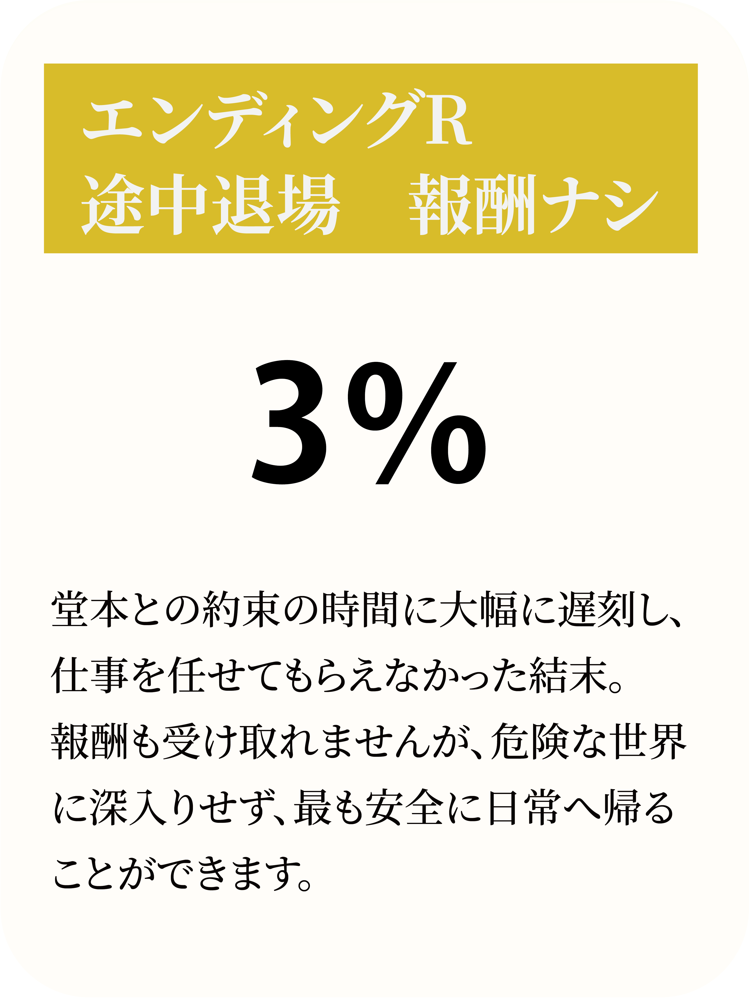
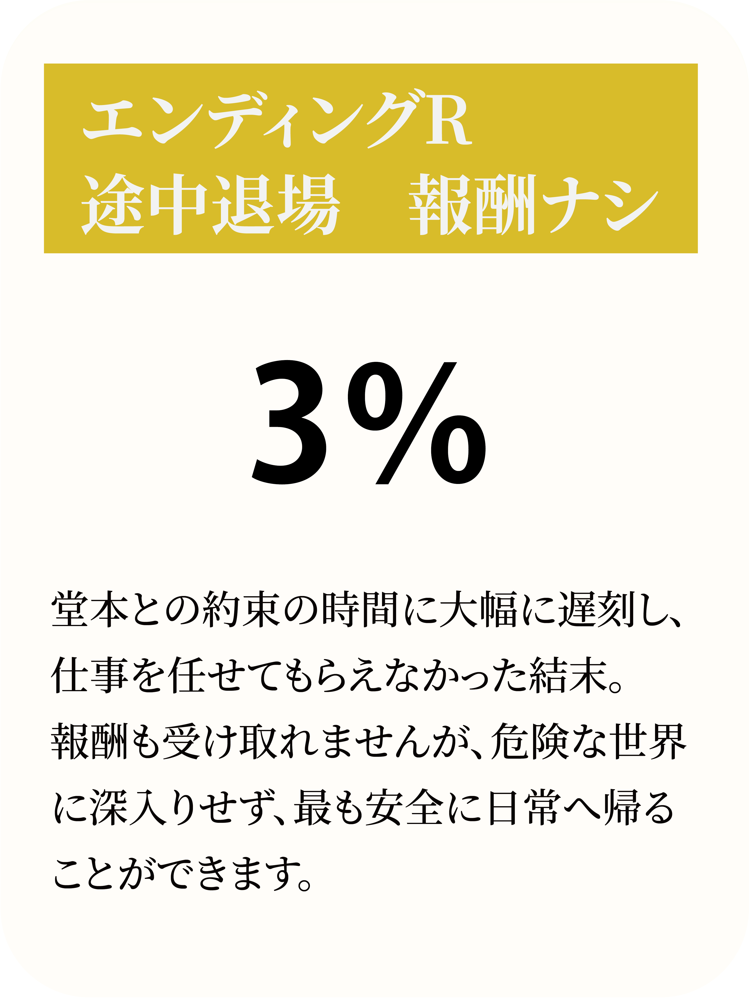
ほとんどのエンディングは、最終的に「堂本との会話の際に、盗み出したメモに何が書かれているか」で決定します。これは、メモの内容＝太平洋観光の輸送ルートであり、メモの内容をもとに三航輸送が動くためです。ただし、破いたり、堂本の直筆でなかったりすると、そもそも藤岡がメモを信用せず、行動は行われないため、失敗となります。メモは元部下の堂本の筆跡ですので、藤岡は容易に捏造を見破ることができます。
さて、メモの内容において重要なのは、特定のルートと、ゴールとなる港です。その「内容」「インクの色」「消した痕跡の有無」によって結末が変わります。
堂本が自分のペンで最後まで書いた場合。三航輸送の依頼完遂ルートです。
警察の検問がある東港近くを経由しつつ、最終目的地を南東港にした場合。検問で太平洋観光サービスが捕まり、少女は保護されます。インクが青色となるのは、途中でペンのインクが切れた堂本が、あなたから借りたフリクションペンを利用しているためです。
警察の検問がある東港をゴールにした場合。こちらも太平洋観光サービスが検挙されます。
後述する最も難しいエンディング条件を満たした場合のみ到達可能です。
隠しエンドは、意図的に大幅な遅刻をした場合にのみ発生します。
番場から暗号の解き方を教わった後、あなたには館内を周遊して暗号を集める時間が与えられます。この時、一定の時間が経過すると、シイナとの合流地点に向かうよう促されます。
しかし、この時間制限を大幅に超過した場合（暗号解読に夢中になりすぎたり、意図的に時間を潰したり）、シイナとの合流に間に合わず、堂本との会談も流れてしまいます。
結果として、あなたは「信用できない人物」と判断され、仕事を任せてもらえなくなります。報酬も受け取れず、斜線の入った小切手だけが渡されます。
ただし、これは裏を返せば「最も安全に日常へ帰れる」エンディングでもあります。危険な世界に深入りせず、犯罪組織との関わりも最小限で済むのです。
このエンディングは存在自体が秘匿されており、他のエンディングの「解説にかえて」でも言及されていませんでした。また、開催期間中にこのエンディングに到達したのはたった4人のみです。
さて、ここからは最も難しいエンディングに到達するための方法を解説いたします。このエンディングに到達するためには、藤岡と堂本、二人に疑われないようにしつつ「2つの組織に、別々の港をゴールとして伝える」必要がありました。
太平洋観光サービスには「南東港」を、三航輸送には「東港」を輸送ルートのゴールとして伝えることで、両組織がそれぞれ別の場所で警察に遭遇し、同時に検挙されることになります。
堂本の決定する輸送ルートは、会話の中で変更し、決定できます。しかし、藤岡からは「堂本の直筆のメモでなければ信用しない」と言われており、決定した輸送ルートの単純な偽造はできません。
ここで鍵となるのが、藤岡が最初に渡してきたフリクションペンでした。
「消せるボールペン」であるフリクションペンの特性を活かし、あなたは以下の手順を踏む必要がありました。
なお、堂本にフリクションペンを使わせるチャンスは2回ありました。
1回目は、堂本が会話冒頭で「インクの出が悪いな」と呟いた時。この時点で貸し出すことができます。
2回目は、輸送ルートを長く設定してメモの量を増やした場合。「東浜物流ターミナル」を書き終えたあたりで本当にインクが尽き、堂本から「ペンをお貸しいただけませんか？」と頼まれます。
藤岡は「消せるものが好き」でフリクションペンを用意し、堂本は「消えないもの」として記憶を重視する。この対照的な二人の性質が、あなたが利用できる唯一の「幸運」です。
実は、LINE上で確認できる「ゲームの楽しみ方」でも、このペンの存在が暗喩されています。
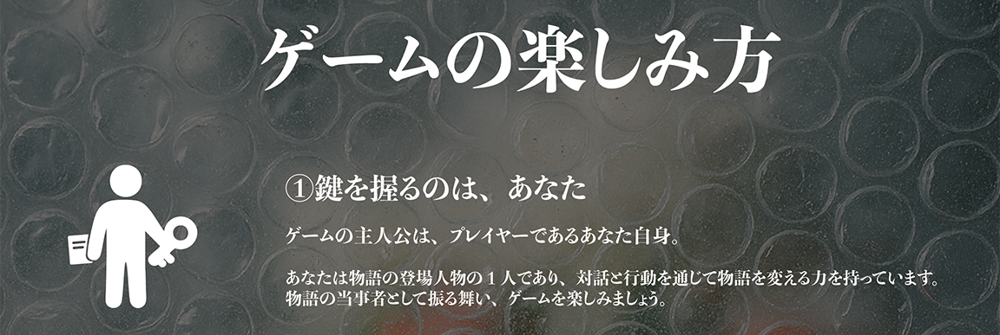太平洋観光サービスは、証拠を残さないために日替わりの暗号を使って会話していました。
本作で使用された暗号は「シール暗号」と呼ばれるもので、池袋PARCO館内の各所に貼られたシールを手がかりに解読する仕組みでした。この暗号のとり扱いをミスすると、堂本の警戒心が高まり、最終的には計画は失敗します。
| 地点 | 設置場所 | 元の言葉 | 暗号 |
|---|---|---|---|
| A 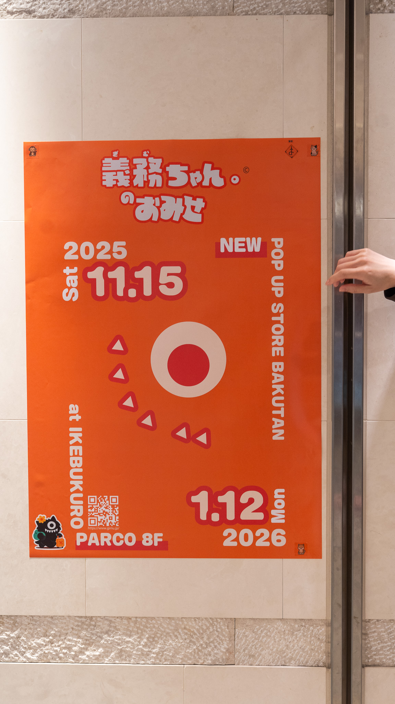 |
足立の待機場所付近 | 警察 | パンダ |
| B 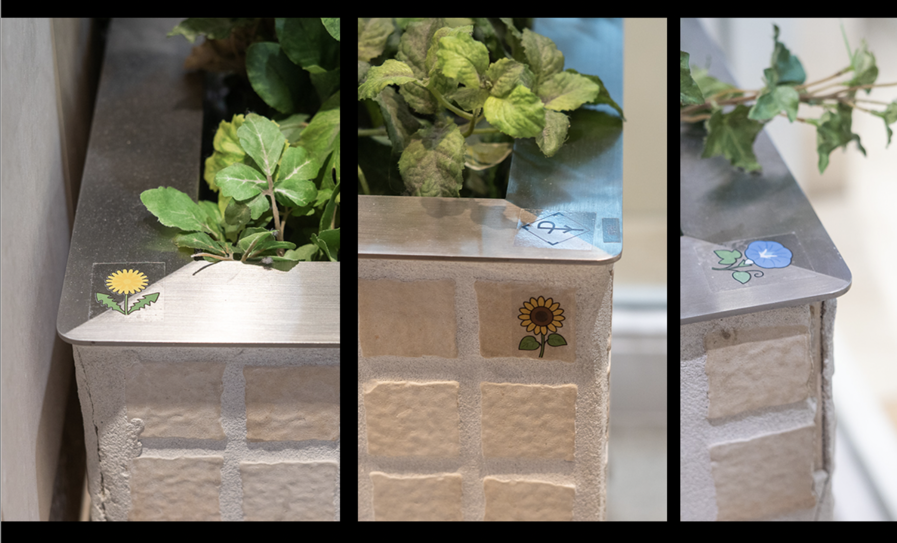 |
植栽 | 暗号 | カメラ |
| C 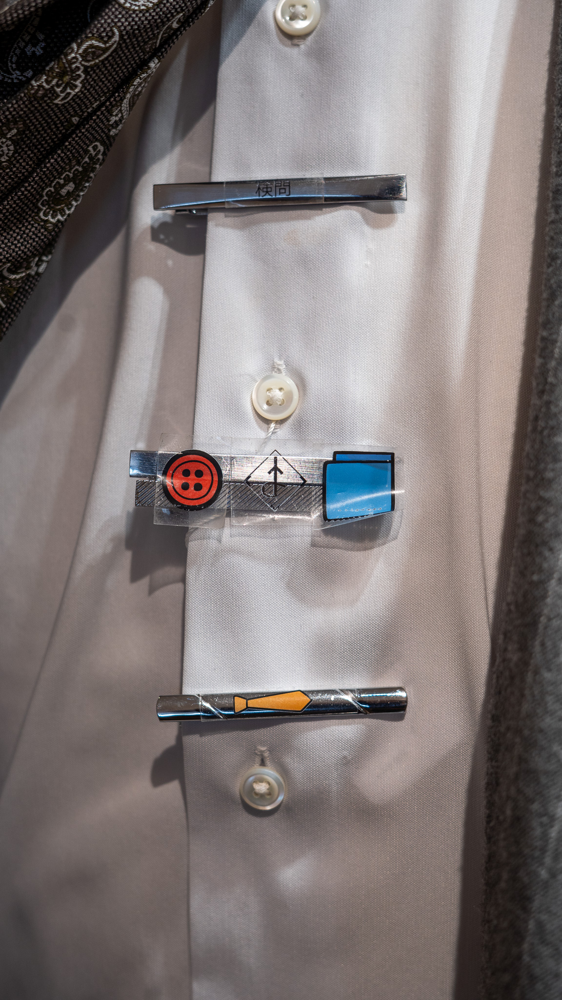 |
マネキン(スーツ) | 検問 | 動物園 |
| D 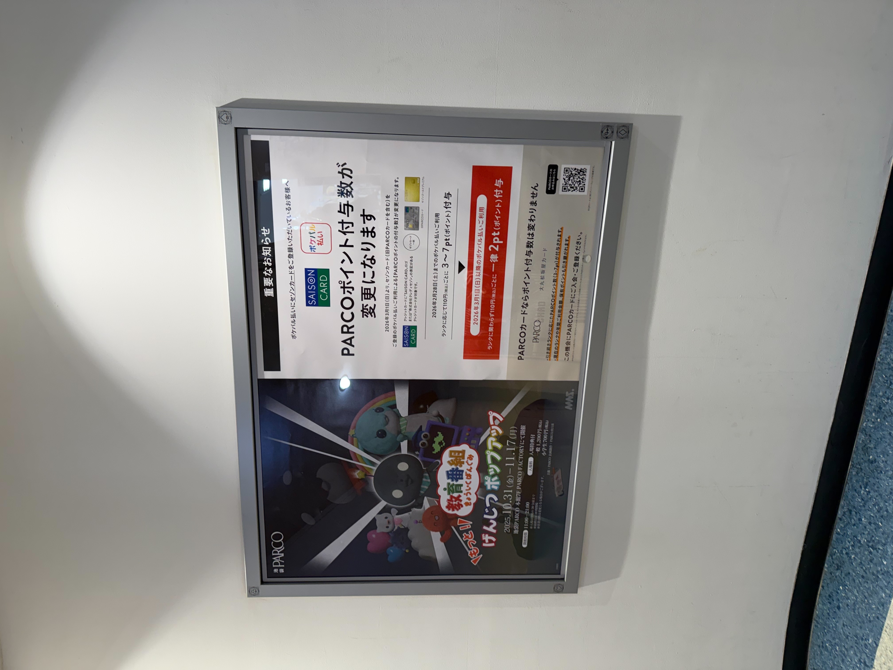 |
ポスターフレーム | 海上取引 | フェリー |
| E 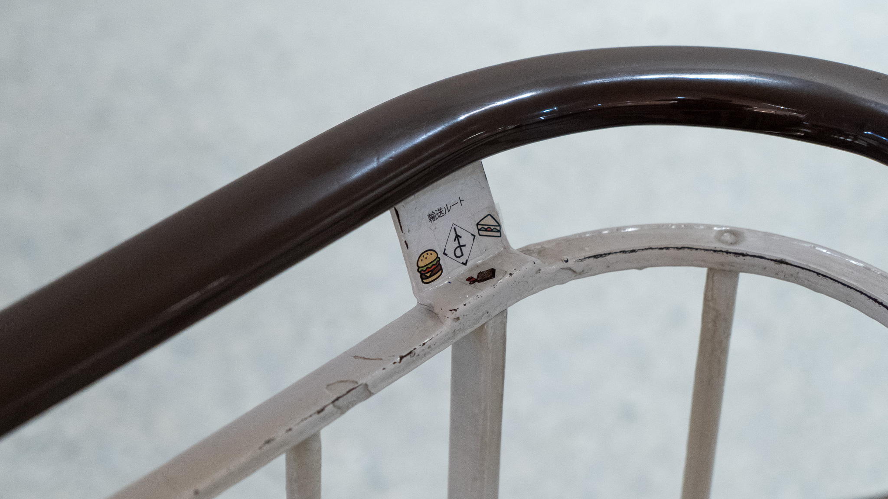 |
手すり | 輸送ルート | カレンダー |
| F 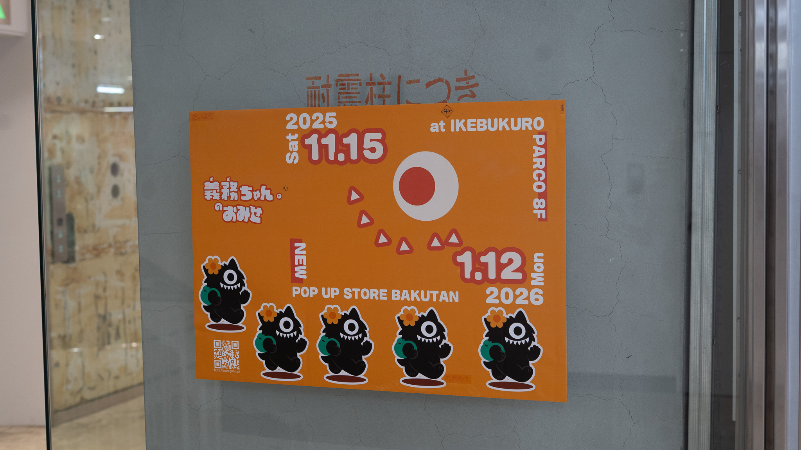 |
ガラス柱 | 輸送品 | お客様 |
| G 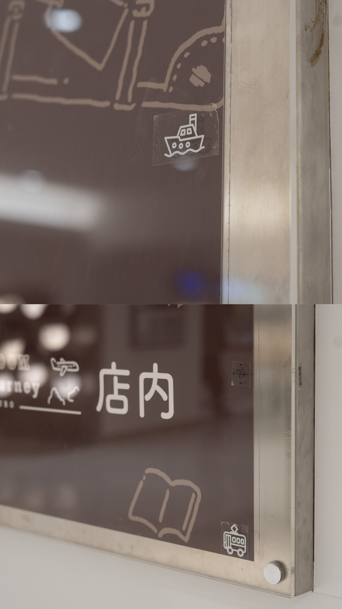 |
HISのポスター | 敵対組織 | ライオン |
| H 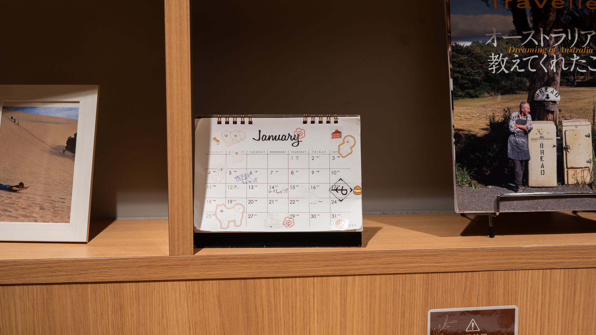 |
カフェ内カレンダー | 復讐 | チケット |
堂本との会話中、唐突に「チケット」という暗号が登場し、困惑した方も多いのではないでしょうか。
これは実は「H」地点の暗号で、H ISカフェ内のカレンダーに仕込まれていました。シイナから「カフェにも暗号がある」と示唆されていましたが、席についてから周囲を確認しなければ気づけない、難易度の高い暗号でした。
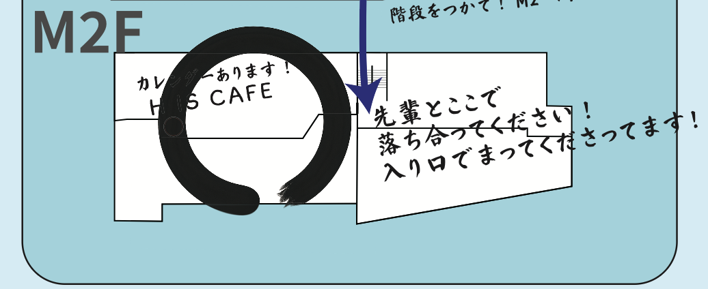「H IS CAFE」これは店名ではなく、「Hはカフェ」というヒントになっていたのです。このような把握しにくいマップになってしまったのは、堂本やシイナの作為ではなく、単純に番場のミスです。「集合地点はわかりやすく囲った方が良くね？」という短絡的な善意でした。
.jpg)
堂本との会話で使用した地図は、「南倉地区」と呼ばれるエリアでした。
少女を乗せた車は、地図左上のあたりから出発し、途中で何度か乗り物を変え、最終的に2つある港のどちらかへ向かいます。あなたの役目は「プロの運び屋」として、最適なルートを堂本にアドバイスすることでした。
会話の中で、堂本は特定のルートを拒否してきました。それぞれに理由があります。
| 提案ルート | 拒否理由(暗号での表現) |
|---|---|
| 見港駅→南丘(直通) | パンダの巣(警察署)が近い |
| 北倉→山北 | ライオン(三航輸送)がいる |
| 倉市→東港(長距離列車) | 列車で長距離移動はリスクがある |
| 南丘→昼ェ埠頭(直通) | 山下公園にパンダの動物園がある |
| 剣崎灯台→南東港(直通) | 医療特区でそもそも通れない |
| 倉市電鉄 | 本数が少なくほぼ廃線 |
これらを避けながら、最適なルートを組み立てる必要がありました。
見港駅 → 倉市駅 → 南丘駅 → 剣崎灯台 → 昼ェ埠頭駅 → 中島JC → 南東港
検問を避けて南東港に直行するルート。三航輸送の待ち伏せが成功します。
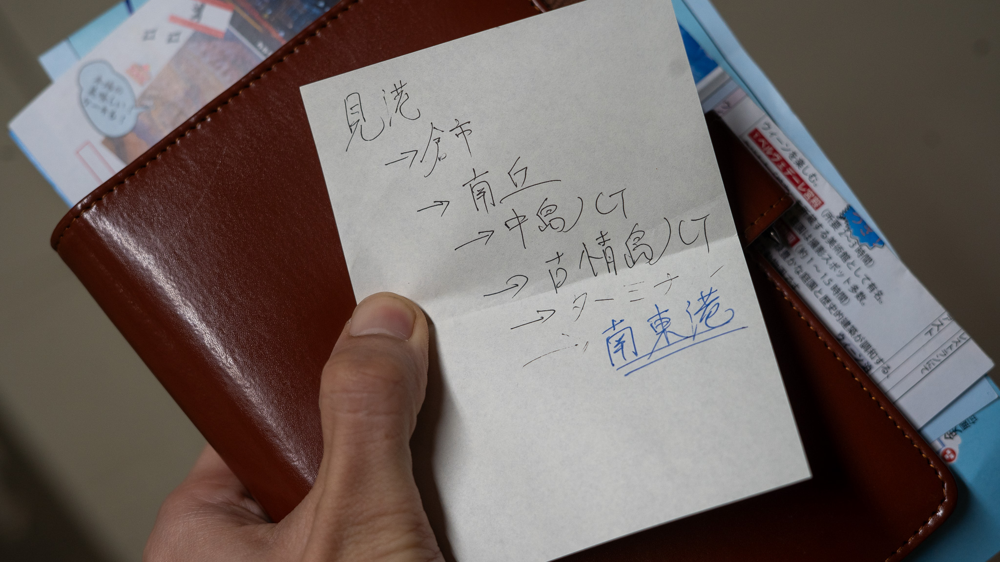見港駅 → 倉市駅 → 南丘駅 → 剣崎灯台 → 昼ェ埠頭駅 → 古情島JC → 東浜物流ターミナル → 東港 or 南東港
東浜物流ターミナルを経由することで、検問を通過するルート。どちらの港に向かっても、太平洋観光サービスが検挙され、ゴールで待機していた三航輸送は検問での騒ぎを察知して撤退します。
シイナから渡された地図の裏面には、手書きのメモがあります。
このメモには、エンディング分岐(特に最も難しいエンディングへの到達方法)の鍵となる重要な情報が記されていました。
また、シイナは口頭でも「三航輸送が待機している港の近くで騒ぎが起きたら、捕まらないようにすぐ撤退しなくちゃいけない」と説明していました。
この情報を整理すると、以下のことが分かります。
ここから導かれる結論が「2つの組織に、別々のゴールを伝える」という最も難しいエンディングへの道筋でした。
本作には、その他にも様々な設定や、俳優陣のアドリブから生まれた要素がございます。ここではその一部をご紹介します。
番場に初めて接触する際、「シイナの紹介です。尾行していました」と伝えた後、番場から「本当にプロなら、俺がさっきまで何してたか言ってみてくださいよ」と試されます。
ここで答えるべき情報は、直前に足立から聞いていた内容です。
この2点を答えられれば、番場はあなたを「本物のプロ」と認め、全面的に信頼してくれます。
しどろもどろになったり、答えられなかった場合、番場は「まぁ、シイナさんの紹介だから信用しますけど……」と渋々受け入れつつ、あなたの義務ちゃんカードにクリップをつけます。このクリップは「信用ならない新人」の印であり、後に堂本と対面した際、最初から信頼度が1段階下がった状態でスタートすることになります。
足立の言葉を注意深く聞いていたかどうかが、ここで試されていたのです。
堂本との会話中、テーブルの上には複数の付箋が置かれていました。これは堂本からプレイヤーへの信頼度を表すゲーム的なサインです。
堂本があなたを怪しいと感じるたびに、付箋は1枚ずつ片付けられていきます。すべての付箋がなくなると、堂本は完全に信頼を失い、ルート相談を打ち切られてしまいます。これが実質的なゲームオーバーであり、エンディングAに直行することになります。
最後の「チケット」については、堂本が会話の途中で唐突に「この仕事は個人的なチケットでもあるんですよ。皆さんもこの業界にいるんだ、わかるでしょう？」と振ってきます。
これはHISカフェ内に仕込まれたH地点の暗号で、「復讐＝チケット」を意味していました。プロの運び屋なら当然知っているはずの暗号を知らないと、堂本の警戒を招くことになります。
藤岡が最初に渡してくるペン。「消せるボールペン」であるフリクションペンは、最も難しいエンディング到達のための重要なアイテムでした。
藤岡が「消せるものは便利で好きだ」と語っていたこのペンが、最終的には藤岡自身にとって不都合な方向に働くことになります。
堂本が使用していたペンは、あなたの出会う時すでにインクが切れかけていました。これはメモ魔であるという彼の設定に根差した意図的な設定で、酷使された結果、長いルートを提案されることでインクが尽き、あなたににペンを借りることになります。
HISカフェ内に置かれていた2026年1月のカレンダー。11月、12月の公演なのになぜ2026年1月なのか──これは、太平洋観光サービスが暗号を仕込むために堂本が持ち込んだものでした。
季節外れのカレンダーという違和感を設けることで、仲間に暗号の存在を伝わりやすくする意図がありました。延長された一月の公演では違和感がなくなり、難易度が上がっていました。
最初の仕事は100万円でしたが、仕事内容が変更されたことで150万円に増額されています。これは相場から大きく乖離した破格の報酬であり、それだけ藤岡が追い詰められていたことを示しています。
クロノミライメディカルから三航輸送に支払われる報酬は数千万円を超えており、シイナの助言もあって「金をばらまいてでもやるべきだ」という判断がなされたようです。
さて、本作で最も大きな秘密として、シイナの正体があります。まず、前提として、本人が提示してくる太平洋観光の名刺には「椎名」とありますが、あらゆるエンディングではこの人物は「シイナ」と表記されます。実はこれは、名刺の名前が本名ではないことを表しています
シイナの本名は黒野粃(くろの しいな)といいます。クロノミライメディカル創業者一族の傍流で、愛人の子として生まれたため戸籍も本名も表に出せず、密かに偽名で生活しているのです。「粃(しいな)」とは"実のない果実"を意味する言葉で、生まれついて一族内で立ち位置を決められた存在であることを喩えたものです。しかし、本人は自身の血統的立場を受け入れる気はなく、創業者一族の椅子を狙っています。
会話では決して明かしてはくれないことですが、黒野粃の本当の仕事は、上位組織であるクロノミライメディカルのエージェントです。自ら手を汚す仕事から、諜報任務まで、登場する誰よりも、危険で暗い領域で生きる人間でした。とはいえ、全ては己の目的のためであり、太平洋観光へのスパイ活動も、その一環です。今回のアクシデントのカバーについても、実は計画の破綻を察知していたクロノミライメディカルから直接指示されており、藤岡にも堂本にも特別な感情はありません。「最終的にどちらかが処分されるだろう」と考えていて、必要があればあなたもその対象に含めるつもりでした。しかしどうやら、ほとんどのエンディングで、あなたへの考えは変わったようです。
この物語は、最も到達者の多かったエンディング「喩送成功」を基準として、次の物語へと進んで参ります。
あなたの選択によって、太平洋観光による密輸は阻止され、三航輸送は「スーツケース」を奪い返すことに成功しました。その結果、クロノミライメディカルは貴重な研究資源を獲得しました。
以前、とある記者の告発によって社会的な非難を受けていた彼らでしたが、この研究の成果によって、それを覆い隠すほどの大きな名声と資金を手にいれるでしょう。これを受け、黒野家のトップ、黒野総一郎は自ら大きなプロジェクトを動かし始めたようです。
ですが、誰かに本名の名刺を渡したらしいシイナ──黒野粃もまた、自らの思惑のために、密かに暗躍を始めています。
彼らが何を企んでいるのか。それは、また別の物語で語られるかもしれません。
ともかく、密行喩送はここで一旦の終わりを迎えます。全ては、この運搬バイトに参加した誰か──あなたかも──の注意深い洞察力と判断の賜物です。
改めて、この度は周遊型イマーシブサスペンス『密行喩送』にご参加いただき誠にありがとうございました。
どんな形であれ、あなたがこの体験を楽しみ、どんなものであれ、あなたの日常へと何かを持ち帰っていただけたなら、制作一同これ以上の幸福はございません。
また、どこか奇妙で、現実味のない、リアルな物語の中でお会いできましたら幸いです。
本公演はわずかながら再演の可能性がございます。
本解説の内容について(登場人物の名前や設定、暗号の内容など)はネタバレとなるためSNSなどでの投稿はご遠慮ください。
しかし、以下については投稿を歓迎しております。
もし楽しんでいただけましたら、ハッシュタグ #密行喩送 にて発信・拡散にご協力をお願いします。